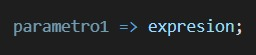

De manera simple, las funciones flecha son algo así como una alternativa compacta a una expresion de función tradicional, pero la desventaja es que es limitada y no se puede usar en todas las situaciones.
Algunas diferencias y limitaciones con respecto a otras expresiones.
- Las funciones flechas no tienen sus propios enlaces a this o super y no se tienen que usar como métodos.
- No tiene ni argumentos ni palabras clave como el new. target.
- No se pueden usar como constructor.
- No se puede usar el vield dentro de su cuerpo.
Descripción sobre las funciones flecha
Una las principales razones del porque del la introducción de las funcions flecha, es para eliminar las complejidades del this, y hacer que la ejecución de dichas funciones sea, al a vez que más corta, más intuitiva para todos.
El mayor beneficio que da para el usuario las funciones flecha, es que con los métotodos a nivel del DOM, que casi siempre requieren de algun tipo de cierre, llamada o aplicación para garantizar su correcto funcionamienito.
Sintaxis básica
Las funciones flecha con una expresión siemple no necesitan un return:
En el caso de que querámos introducir varios parametros debermos de usar paréntesis, y como es una expresión simple de múltiple parámetro no utilizaremos return:

Las declaraciones en varías lineas en las funciones flecha si requieren tanto de corchetes y de un return

Varios parámetros y varáas líneas de código requieren tanto de paréntesis

Ejemplo:
El siguiente ejemplo, es un ejemplo bastante sencillo pero funcional, en el, al dar click en el botón nos enviará un mensaje pidiendo nuestra edad, si es mayor a 18 nos dirá el mensaje "Adios", si es menor "Hola".
Sintaxís usada:
La sintaxís usada es bastante sencilla, por medio del boton y gracias al id podemos ocupar la función get.

Luego en el onclick, ejecutaríamos la función flecha.